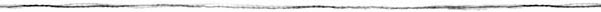
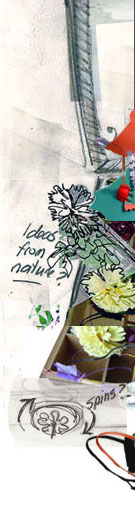
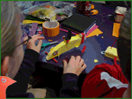
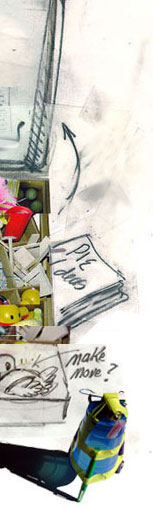
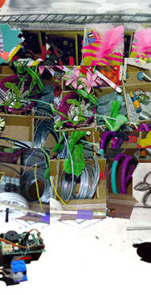

Home
Crickets
Events
Ideas

Locations
Philosophy


|  |
 |
 |
|  |
||
Explore ideas and activities that take a playful approach to invention and integrate engineering with artistic expression.
|
|
|
This material is based upon work supported by the National Science Foundation under grant number 0087813. Any opinions, findings, and conclusions or recommendations expressed in this material are those of the authors and do not necessarily reflect the views of the National Science Foundation. |

|
PIE
(Playful Invention and Exploration) Network Staff Site
Send additions to or corrections to piewebteam |